screenshot archive
November 1, 2025 • edited September 17, 2026
A collection of screenshots from various points in this website's history.
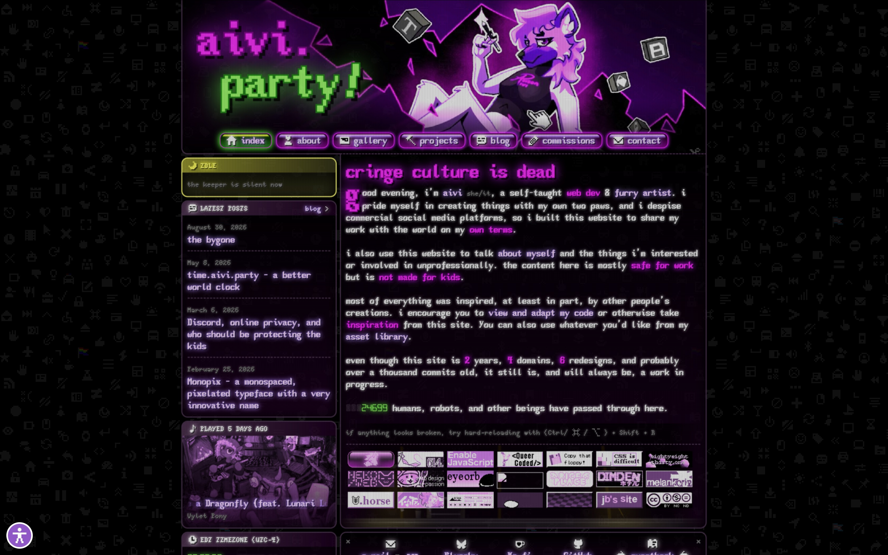
September 8, 2026 - colorizing, lowercasing, and brand identity establishment
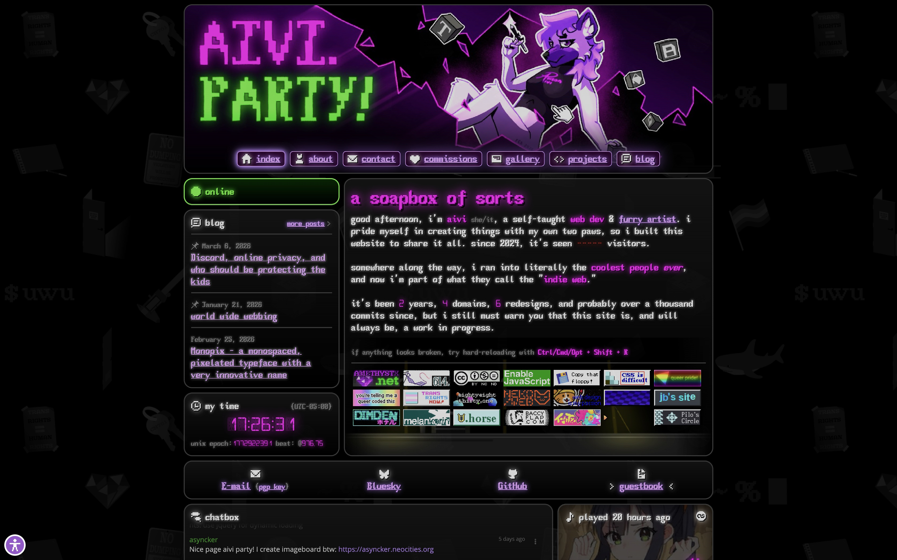
March 8, 2026 - website style consistency/accessibility upgrades
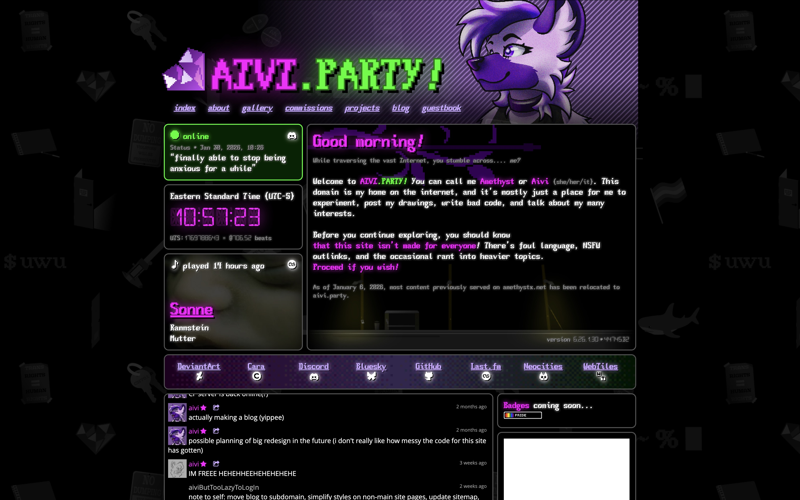
January 30, 2026 - new alternating column layout
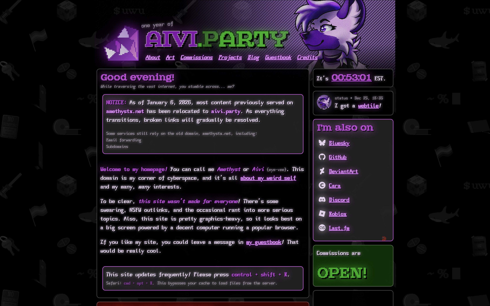
January 6, 2026 - transition to second real domain and CF Workers
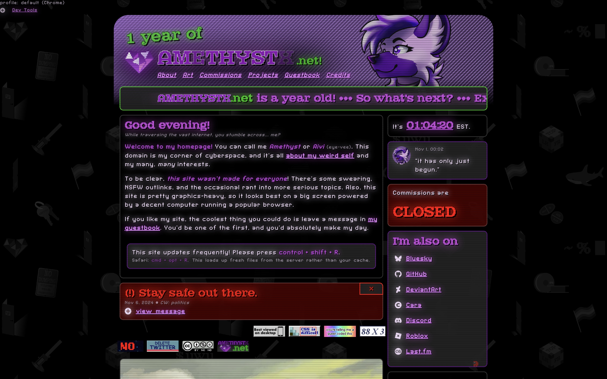
November 1, 2025 - one year anniversary
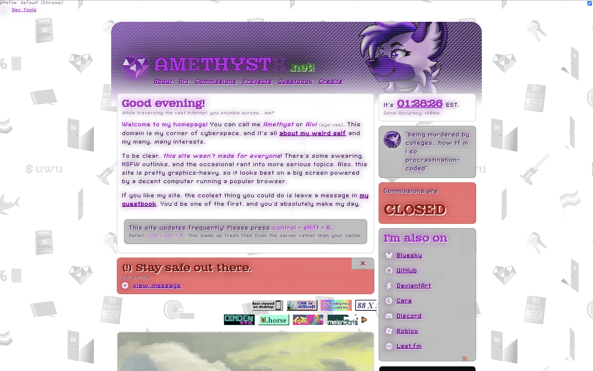
September 20, 2025 - light mode experiment
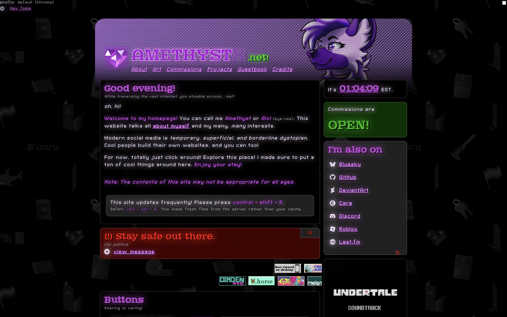
September 7, 2025 - integrated banner
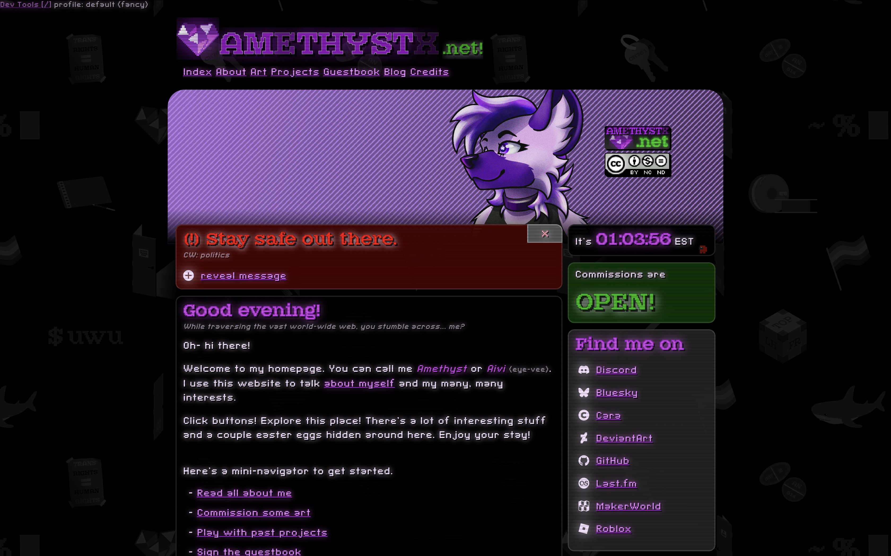
July 21, 2025 - fursona banner experiment
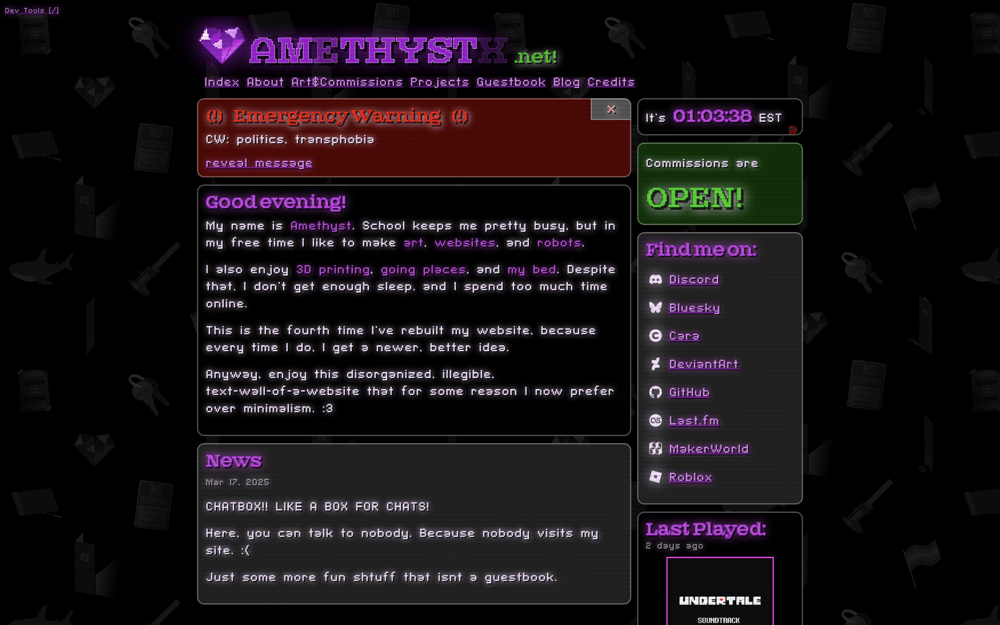
March 23, 2025 - chatbox and live music scrobbler functionality
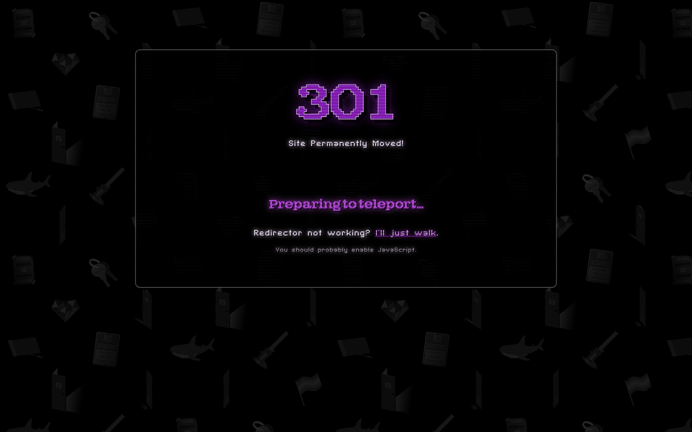
February 22, 2025 - transition to first real domain
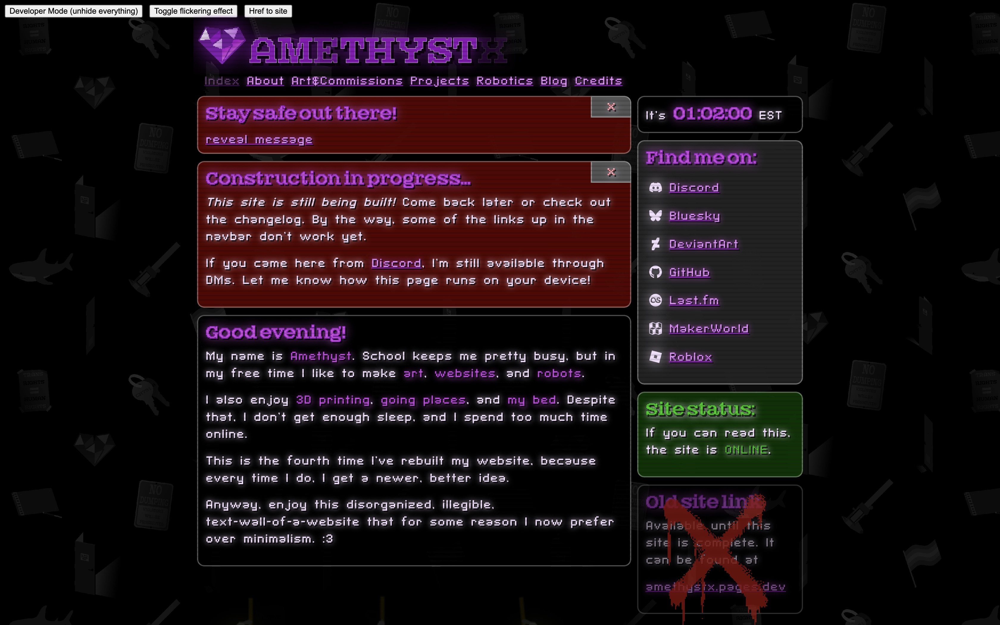
December 12, 2024 - background and new URL
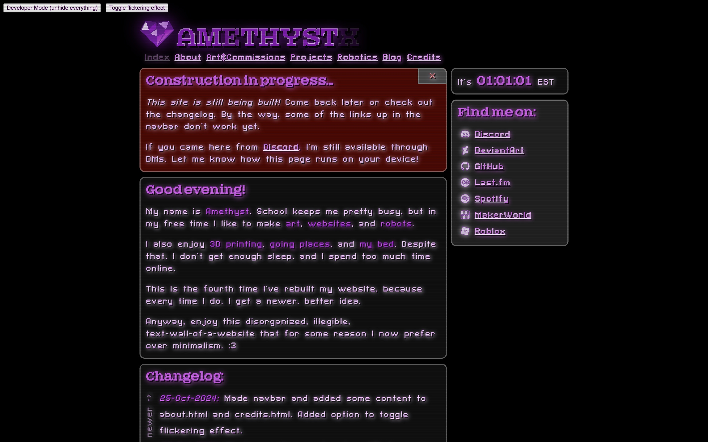
October 30, 2024 - structure begins taking shape
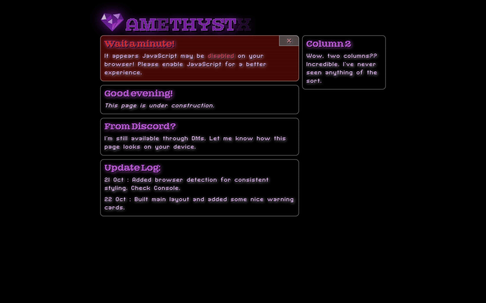
October 22, 2024 - website goes live
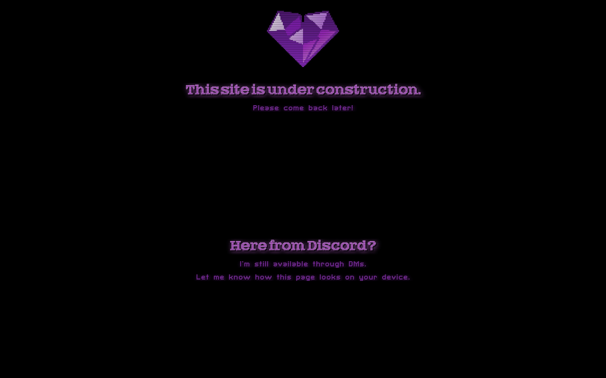
October 18, 2024 - initial deployment and construction notice